Music separation with DNNs: making it work
fabian-robert.stoter@inria.fr
faroit
antoine.liutkus@inria.fr
September 23rd, 2018
Music Unmixing/Separation
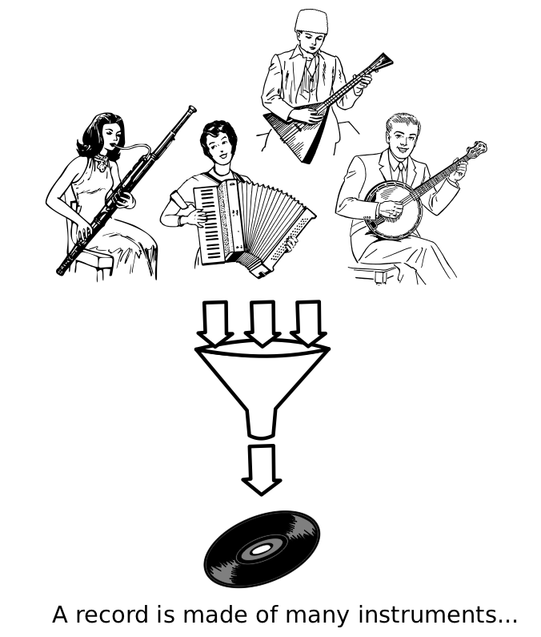 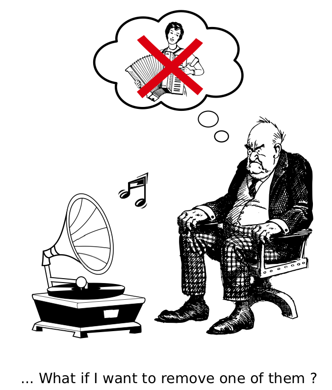Applications
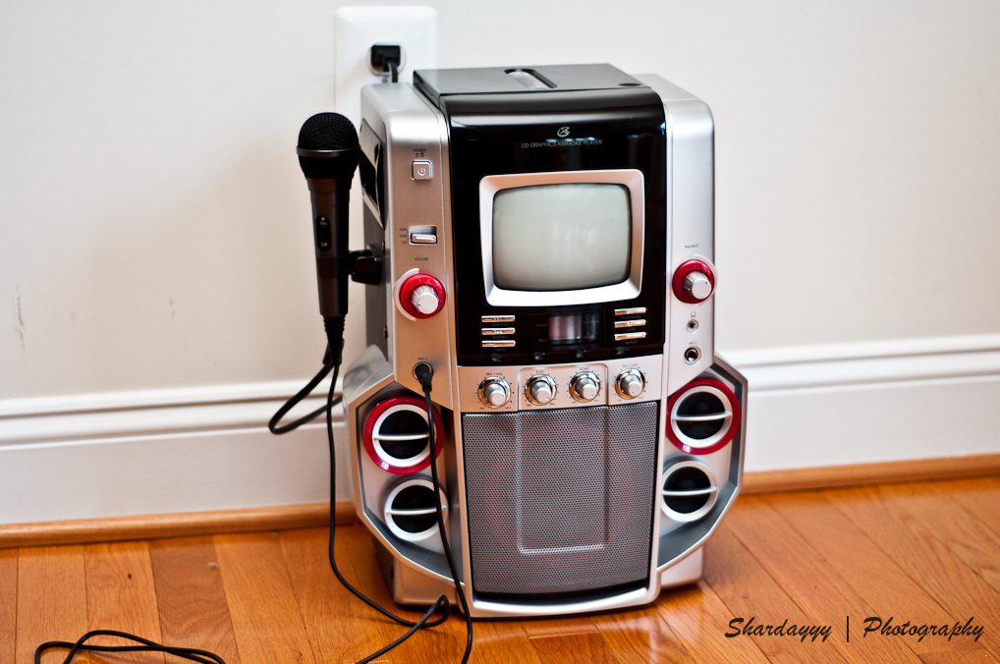- Automatic Karaoke
- Creative Music Production
- Personal Remixing
- Upmixing (stereo $\Rightarrow$ 5.1)
- Music Education
- Pre-processing for MIR
Introduction
- Concepts and background
- A brief history
- Datasets
- Deep neural networks
Introduction
Concepts and background
Time-frequency representationsMixture spectrogram
Vocals spectrogram
Drums spectrogram
Bass spectrogram
Concepts and background
Hands on time-frequency representations
- Start the notebook session
- For one track, display waveforms, play some audio
- Display spectrogram of mixture
Concepts and background
Time-frequency as pre-whitening
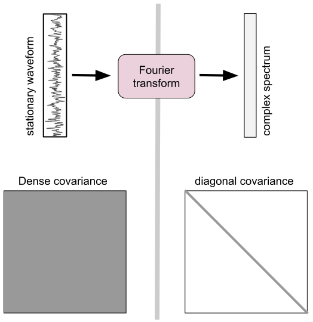- Frames too short: not diagonalized
- Frames too long: not stationary
Concepts and background
Time-frequency as pre-whitening
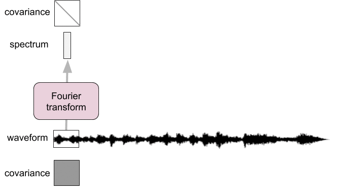Concepts and background
post-processing: filtering
- Get spectrograms of the sources
- Display the corresponding soft-mask for vocals
- Apply it on the mixture, reconstruct and listen to the result
Concepts and background
post-processing: filtering
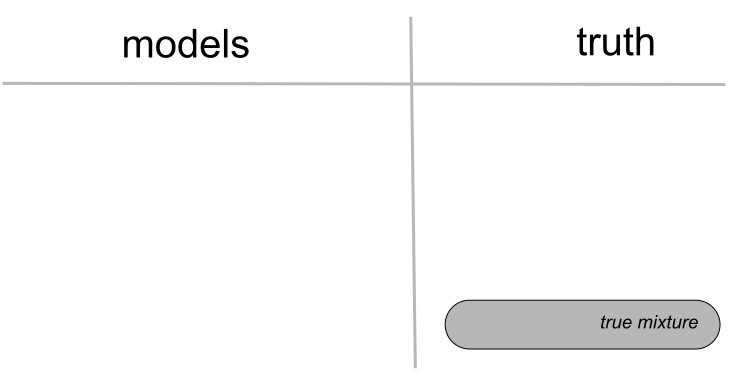Concepts and background
post-processing: filtering
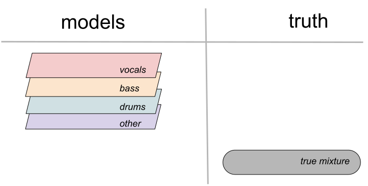Concepts and background
post-processing: filtering
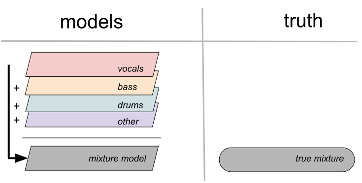Concepts and background
post-processing: filtering
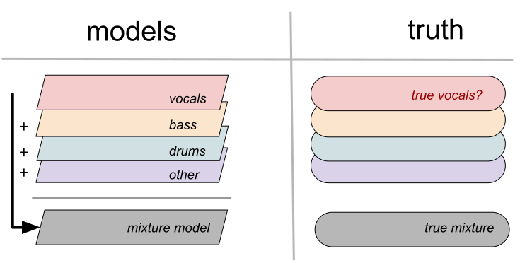Concepts and background
post-processing: filtering
 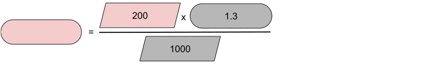
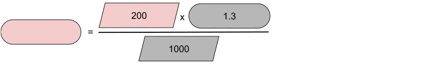
Concepts and background
post-processing: filtering
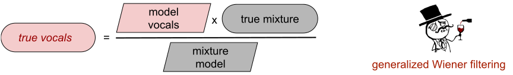Concepts and background
The big picture
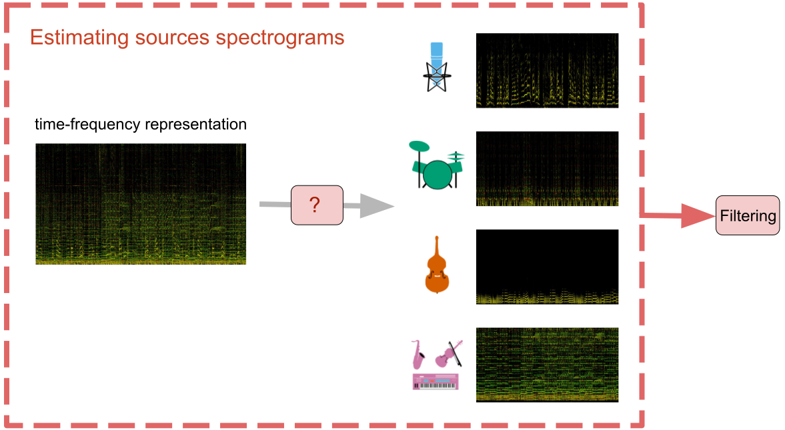
Introduction
A brief history
Rafii, Zafar, et al. "An Overview of Lead and Accompaniment Separation in Music." IEEE/ACM Transactions on Audio, Speech and Language Processing (TASLP) 26.8 (2018): 1307-1335.
A brief history: model-driven methods
Harmonicity for the lead

- Pitch detection
- Clean voices
- `Metallic` artifacts
A brief history: model-driven methods
Redundancy for the accompaniment: NMF

- Spectral templates
- Low-rank assumptions
- Bad generalization
A brief history: model-driven methods
Redundancy for the accompaniment: RPCA

- Low-rank for music
- Vocals as unstructured
- Strong interferences in general
A brief history: model-driven methods
Redundancy for the accompaniment: REPET

- Repetitive music
- Non-repetitive vocals
- Solos in vocals
A brief history: model-driven methods
Modeling both lead and accompaniment: source filter

- Harmonic vocals
- Low-rank music
- Poor generalization
A brief history: model-driven methods

Cascaded methods
- Combining methods
- Handcrafted systems
- Poor generalization
A brief history: model-driven methods
Fusion of methods

- Combining in a data-driven way
- Doing best than all
- Computationally demanding
Introduction
Datasets and evaluation
Music separation datasets
| Name | Year | Reference | #Tracks | Tracks dur (s) | Full/stereo? | Total length |
|---|---|---|---|---|---|---|
| MASS | 2008 | (Vinyes) | 9 | (16 7) | ❌ / ✔️ | 2m24s |
| MIR-1K | 2010 | (Hsu and Jang) | 1,000 | 8 | ❌ / ❌ | 2h13m20s |
| QUASI | 2011 | (Liutkus et al.) | 5 | (206 21) | ✔️ / ✔️ | 17m10s |
| ccMixter | 2014 | (Liutkus et al) | 50 | (231 77) | ✔️ / ✔️ | 3h12m30s |
| MedleyDB | 2014 | (Bittner et al) | 63 | (206 121) | ✔️ / ✔️ | 3h36m18s |
| iKala | 2015 | (Chan et al) | 206 | 30 | ❌ / ❌ | 1h43m |
| DSD100 | 2015 | (Ono et al) | 100 | (251 60) | ✔️ / ✔️ | 6h58m20s |
| MUSDB18 | 2017 | (Rafii et al) | 150 | (236 95) | ✔️ / ✔️ | 9h50m |
The musdb dataset
- 100 train / 50 test full tracks
- Mastered with pro. digital audio workstations
- Parser and Evaluation tools in
- https://sigsep.github.io/datasets/musdb.html

hands-on
- Loop over some musdb tracks
Evaluating quality
BSSeval v3
All metrics in dB. The higher, the better:- SDR: Source to distortion ratio. Error in the estimate.
- SIR: Source to interference ratio. Presence of other sources.
- SAR: Source to artifacts ratio. Amount of artificial noise.
E. Vincent et al. "Performance measurement in blind audio source separation." IEEE transactions on audio, speech, and language processing 14.4 (2006): 1462-1469.
museval (BSSeval v4)
- Better matching filters computed track-wise
- Faster 10x
F. Stöter et al. "The 2018 Signal Separation Evaluation Campaign." LVA/ICA 2018.
Evaluating quality
Hands-on
- Evaluate our separation system on musdb
- Compare to state of the art (SiSEC18)
Introduction
Deep neural networks
Y. LeCun, et al. "Deep learning". nature, 521(7553), 436 (2015).
Deep neural networks
Basic fully connected layer
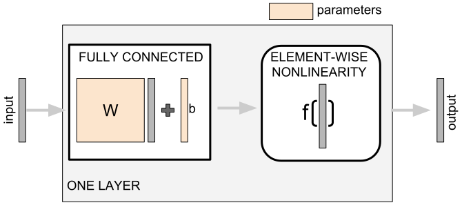 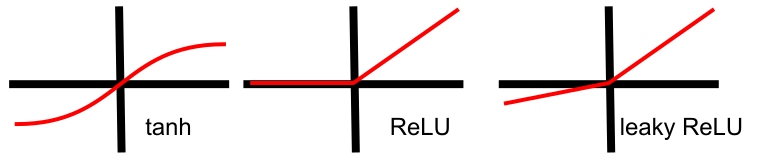Deep neural networks
Basic fully connected network
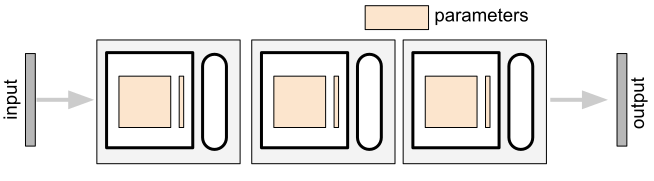Deep neural networks
Usual deep network

- Cascading linear and non-linear operations augments expressive power
- 7 millions parameters in our case
Deep neural networks
Training: vocabulary
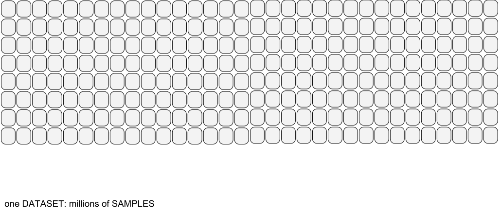Deep neural networks
Training: vocabulary
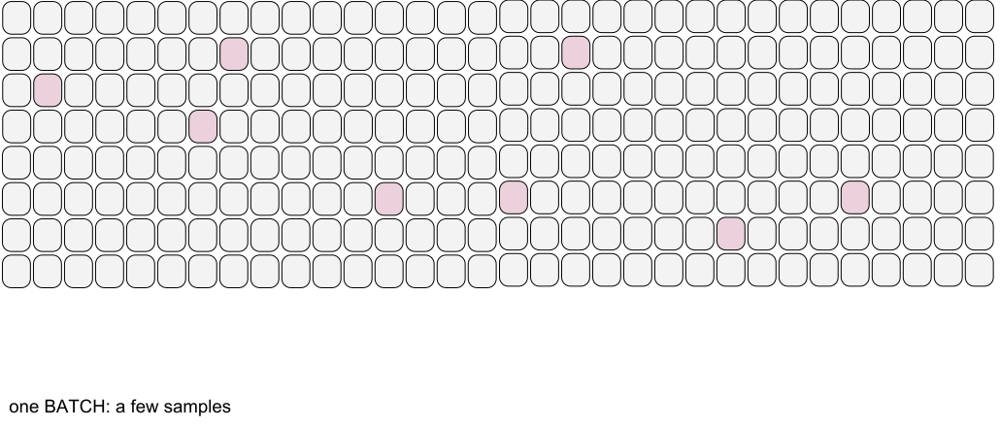Deep neural networks
Training: vocabulary
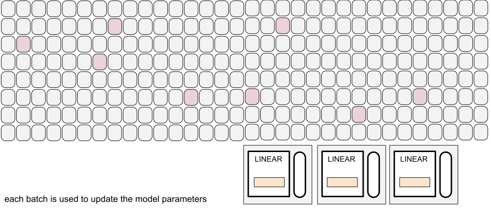Deep neural networks
Training: vocabulary
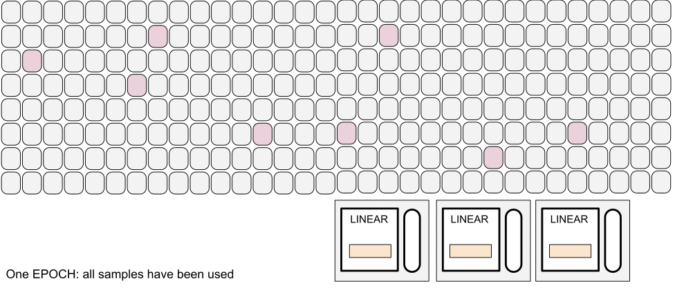Deep neural networks
Training: the supervised approach
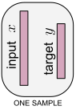Deep neural networks
Training: the supervised approach
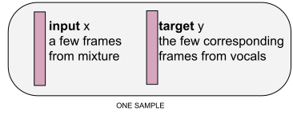Deep neural networks
Training: the supervised approach
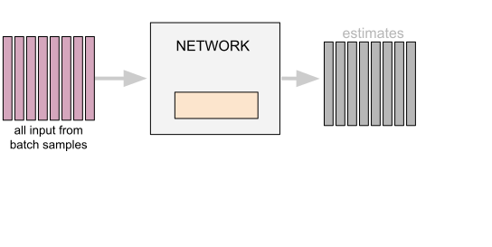Deep neural networks
Training: the supervised approach

Deep neural networks
Training: the supervised approach
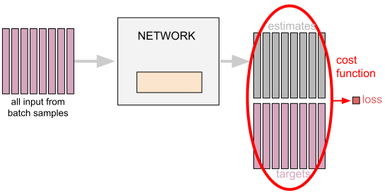Deep neural networks
Training: the supervised approach

- $loss\leftarrow \sum_{(x,y)\in batch}cost\left(y_\Theta\left(x\right), y\right)$
- Update $\Theta$ to reduce the loss!
- We can compute $\frac{\partial loss}{\partial\Theta_{i}}$ for any parameter $\Theta_i$
- "The influence of $\Theta_i$ on the error"
- It's the gradient
- Computed through backpropagation
- A simple optimization: $\Theta_i\leftarrow \Theta_i - \lambda \frac{\partial loss}{\partial\Theta_{i}}$
- It's the stochastic gradient descent
- $\lambda$ is the learning rate
There are many other optimization algorithms...
Deep neural networks: modeling temporal data
colah's blog, Understanding LSTM Networks, 2015.
Deep neural networks: modeling temporal data
From fully connected to the simple recurrent net
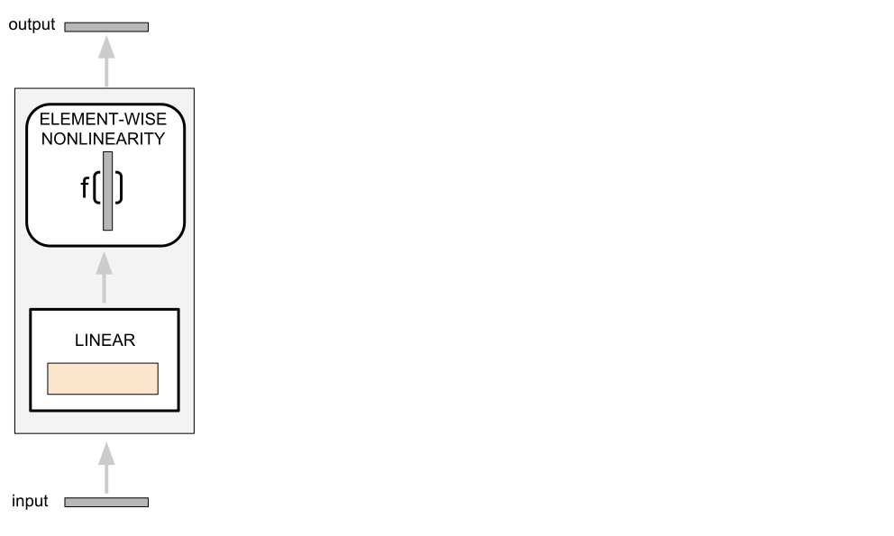Deep neural networks: modeling temporal data
From fully connected to the simple recurrent net
Deep neural networks: modeling temporal data
From fully connected to the simple recurrent net
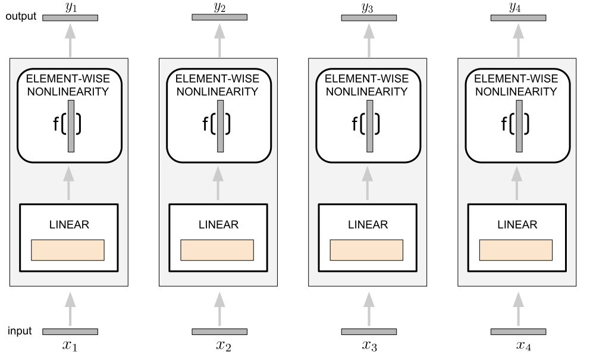Deep neural networks: modeling temporal data
From fully connected to the simple recurrent net
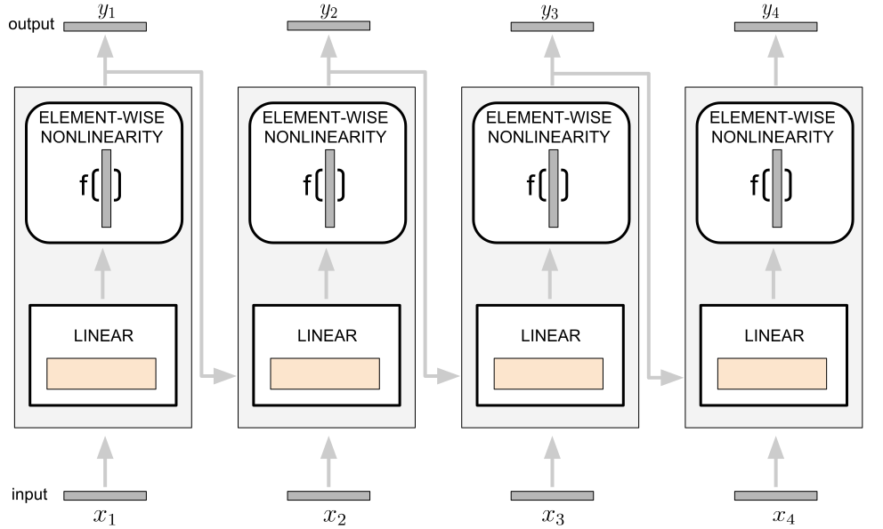Deep neural networks: modeling temporal data
The simple recurrent net
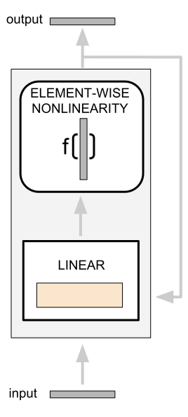- $y_{t}=f\left(linear\left\{ x_{t},y_{t-1}\right\} \right)$
- Similar to a Markov model
- Exponential decay of information
- Vanishing or exploding gradient for training
- Limited for long-term dependencies
P. Huang, et al. "Deep learning for monaural speech separation". (2014) ICASSP.
Deep neural networks: modeling temporal data
The long short term memory (LSTM)
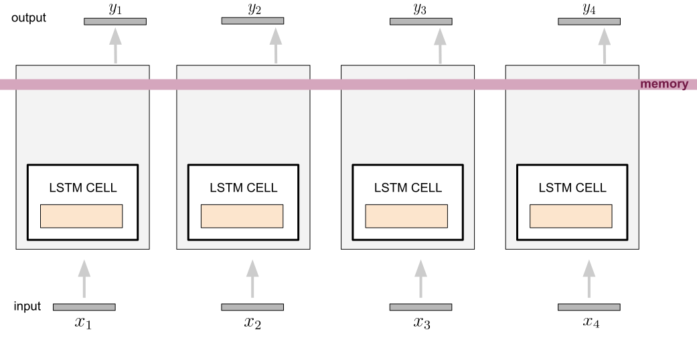Deep neural networks: modeling temporal data
The long short term memory (LSTM)
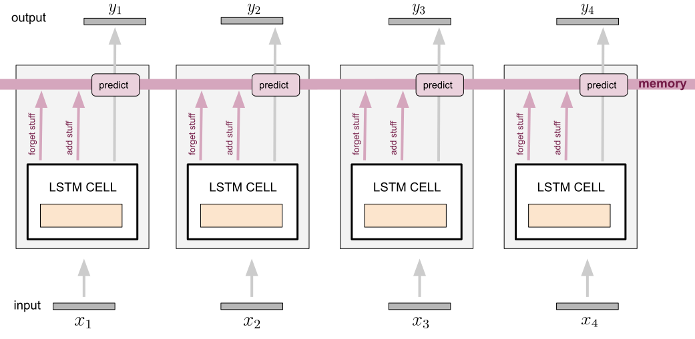Deep neural networks: modeling temporal data
The long short term memory (LSTM)
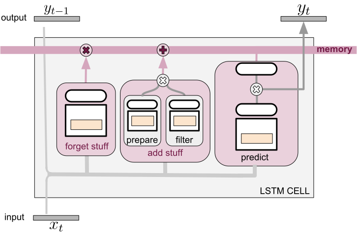Deep neural networks: modeling temporal data
The bi-LSTM

- LSTM are causal systems
- Predicts future from past
Deep neural networks: modeling temporal data
The bi-LSTM
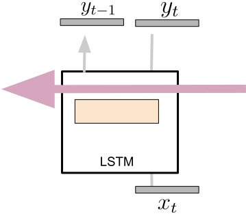- We can use anti-causal LSTM
- Different predictions!
Deep neural networks: modeling temporal data
The bi-LSTM
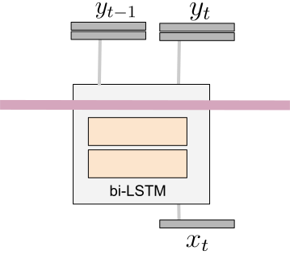- Independent forward and backward
- Outputs can be concatenated
- Outputs can be summed
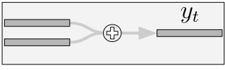
Our vanilla deep neural net for separation
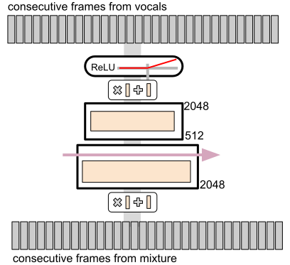- One LSTM
- One fully connected
- 6 million parameters
- Implement the model in pytorch
Spectrogram sampling
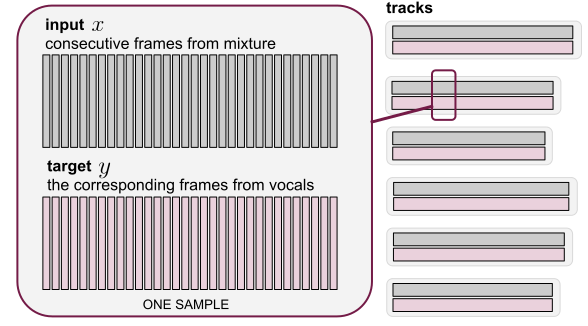- Build a naive data sampler
- Start training the vanilla!
Our vanilla deep neural net for separation
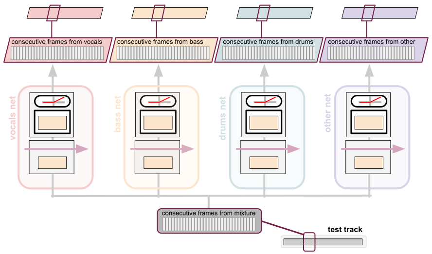- Use the vanilla model for separation
Outline
Choosing the right representation
- Input dimensionality reduction
- Fourier transforms parameters
- Standardization
Choosing the right representation: standardization
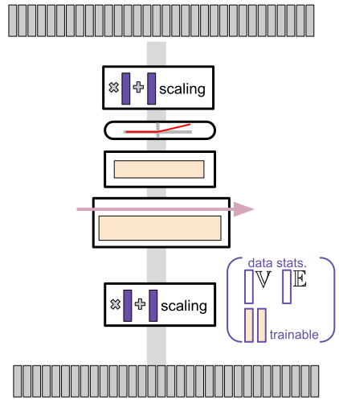- Compensate different features scales
- Classical pre-processing
- Either dataset stats or trainable
Choosing the right representation: standardization
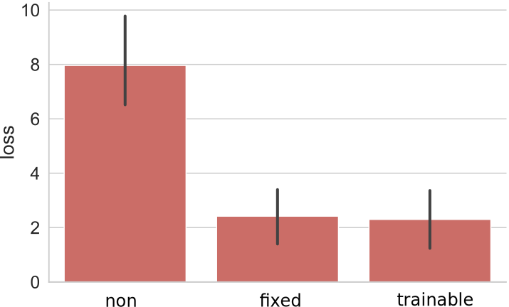 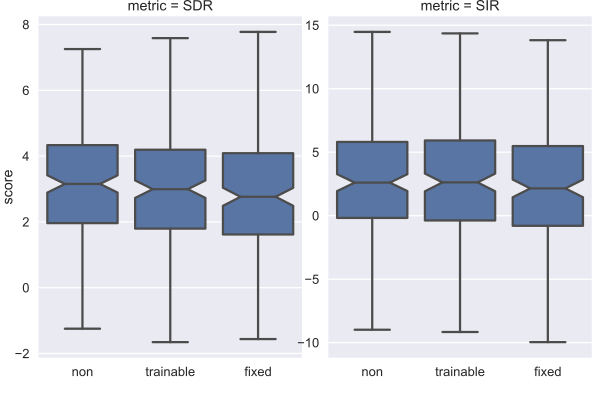- Input/output scaling always lead to better loss
- Trainable is better than fixed
- Good loss needs scaling, but no influence on SDR
- We use scaling all the time
Choosing the right representation: Fourier transform

- Network is always fed 360ms of context
Choosing the right representation: Fourier transform
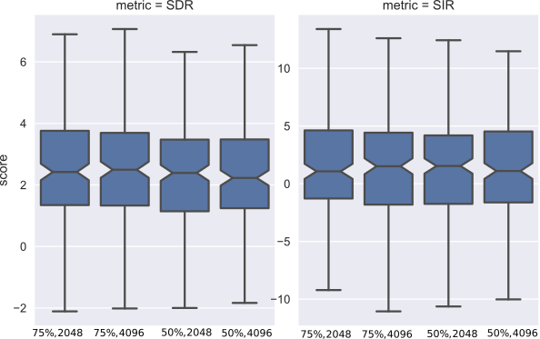- Frames: 92ms=4096 samples @ 44k1kHz
- Overlap: 75%
- Long frames, large overlap
Choosing the right representation
Input dimensionality reduction
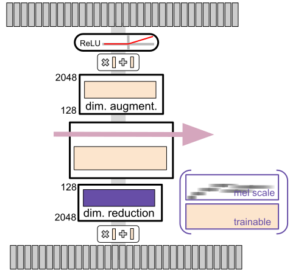- Reduce number of parameters?
- From 6 million to 500k
- Fixed or trainable reduction
- Should we handcraft features?
Choosing the right representation
Input dimensionality reduction

- Reducing dimension
- Reduces model size
- Gives bettter performance
- Don't handcraft features, train them
Outline
DNN Structure: optimizing the vanilla net

- Network dimensions
- LSTM vs BLSTM
- Skip connection
DNN structure: network dimension
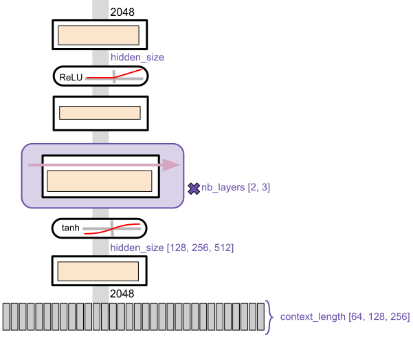DNN structure: network dimension
The more parameters, the better
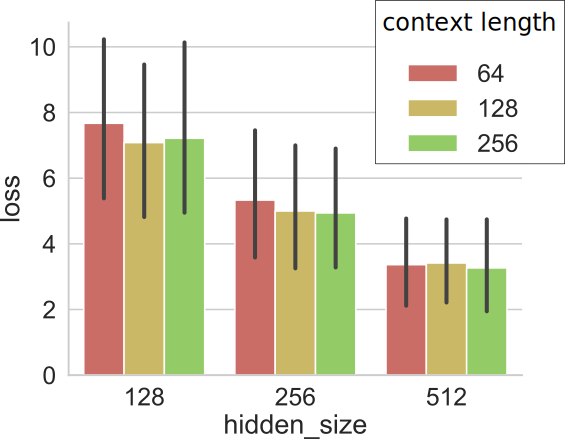 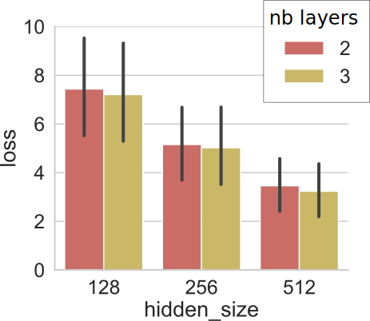- Context length not so important
- LSTM unable to model long-term musical contexts?
- Hidden size (model dimension) has strong influene
- Large models are good
DNN structure: network dimension
The more parameters, the better, really?
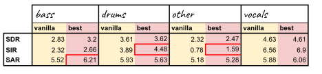- Moderate impact on SDR
- Strong impact on SIR
- Improves separation much
- But not a huge impact as in loss
- Loss on spectrograms is not audio quality
DNN structure: LSTM vs BLSTM
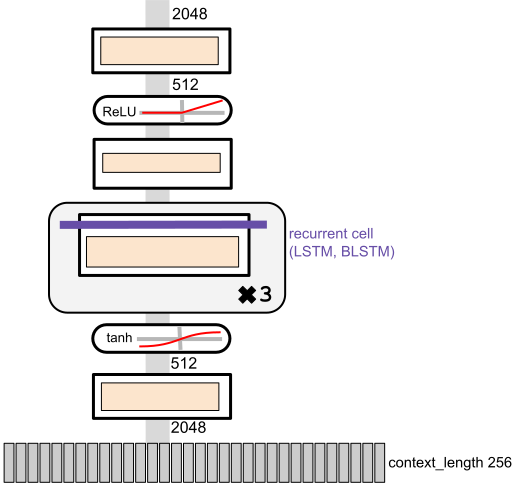DNN structure: LSTM vs BLSTM
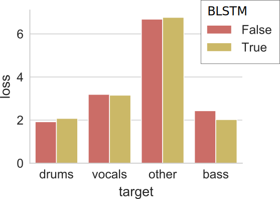 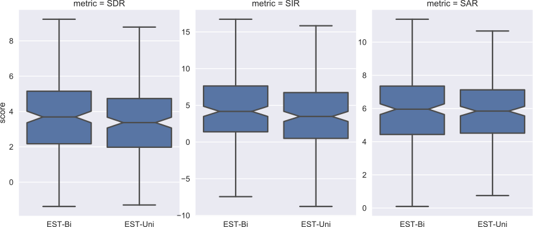
- Loss is similar
- BLSTM are better metric-wise
- BLSTM require the same context length at train and test
$\Rightarrow$ chop the data into batches at test time!
DNN structure: skip connection
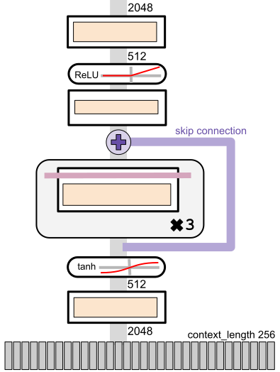- Should reduce vanishing gradient
- Much used in very deep nets
DNN structure: skip connection
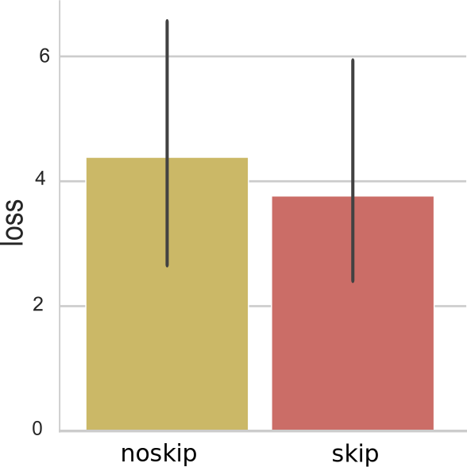
- Improves loss slightly
- No effect on overall metrics
DNN structure: skip connection
- Better bass and drums
Recap: current structure for the baseline
Outline
Training
- Cost function
- Training tricks
- Data augmentation
- Sampling strategy
Training: the cost function jungle
$loss=\sum_{b\in batch, f,t} d\left(Y_b\left(f,t\right),\hat{Y}_b\left(f,t\right)\right)$
- Wide variety of cost functions $d\left(a,b\right)$
- squared loss $\left|a-b\right|^2$
- absolute loss $\left|a-b\right|$
- Kullback Leibler loss $a\log\frac{a}{b}-a+b$
- Itakura Saito loss $\frac{a}{b}-\log\frac{a}{b}-1$
- Cauchy, alpha divergence, ...
- Applied on $Y$, $Y^2$, any $Y^\alpha$, $\log Y$, ...
- Theoretical groundings for all
C. Févotte, et al. "Algorithms for nonnegative matrix factorization with the β-divergence." Neural computation 23.9 (2011): 2421-2456.
A. Liutkus, et al. "Generalized Wiener filtering with fractional power spectrograms." (2015) ICASSP.
Training: the cost function jungle
A. Nugraha, et al. "Multichannel Audio Source Separation With Deep Neural Networks." TASLP 24.9 (2016): 1652-1664.
Training: learning rate and normalization


- We check for $\left[0.01, 0.001\right]$
Leonardo Araujo dos Santos, Artificial Intelligence, 2017.
Training: learning rate and normalization
Training: learning rate and normalization
- High learning rates don't work
- Keep default parameters for optim
Training: learning rate and normalization
- batchnorm fails in our case
- train batch: many songs
- test batch: one song
- layernorm forces matching
- test batch: normalized as in training
- batchnorm behaves wildly, avoid it

Training: learning rate and normalization
- Improves isolation: better SIR
- Adds distortion: worse SAR
Training: regularization with dropout
- Parts of the net randomly set to 0
- No unit should be critical: regularization
- Probabilistic interpretation
N Srivastava, et al. "Dropout: a simple way to prevent neural networks from overfitting". JMLR. (2014) 15(1), 1929-1958.
Training: regularization with dropout
- Regularization makes things worse
- is overfitting really bad/possible for us?
Training: sampling strategy
- Non unique tracks in batch
- Not all samples per epoch
Training: sampling strategy
- Unique tracks in batch
- Not all samples per epoch
Training: sampling strategy
- Non unique tracks in batch
- All samples per epoch
Training: sampling strategy
- Unique tracks in batch
- All samples per epoch
Training: sampling strategy
- Unique tracks per batch not so useful
- All samples per epoch is important
Training: data augmentation
- Basic augmentation: overlap samples within each track
- There are more advanced strategies
S. Uhlich, et al. "Improving music source separation based on deep neural networks through data augmentation and network blending." (2017) ICASSP.
Training: data augmentation
- Basic augmentation helps a bit (0.5dB)
- Not shown: new tracks are better!
Open Source Unmix (OSU) models
Outline
Testing
- Representation
- Mono filter tricks
- Multichannel Gaussian model
- The multichannel Wiener filter
- Testing: evaluation
Testing: representations
- The first source of poor results: inverse STFT!
- Verify perfect reconstruction
- Better: use established libraries, like librosa, scipy...
- Image of a waveform with clicks every 512 samples
- Player for this
Testing: mono filter tricks
Logit filters
- If the mask is 0.8... just put 1
- If the mask is 0.2... just put 0
- Cheap interference reduction
- Demo without mask compression
- Demo with mask compression
Multichannel Gaussian model
Multichannel Gaussian model
Multichannel Gaussian model
Multichannel Gaussian model
Multichannel Gaussian model
Multichannel Gaussian model
The multichannel Wiener filter
- Sources and mixtures are jointly Gaussian
- We observe the mix, what can we say about the sources?
The multichannel Wiener filter
The multichannel Wiener filter
The multichannel Wiener filter
The multichannel Wiener filter
The multichannel Wiener filter
The multichannel Wiener filter
The multichannel Wiener filter
Expectation maximization: the big picture
Testing: evaluation
Testing: evaluation
- better SIR
$\Rightarrow$ greatly reduces interferences
- worse SAR
$\Rightarrow$ introduces distortion
- logit has good SIR
$\Rightarrow$ cheap interference reduction
Outline
Conclusion
- Resulting baseline
- What was kept out
- What is promising
- Ending remarks
Conclusion: the open source unmix
Conclusion: what was kept out
- Exotic representations
- Alternative structures
- The convolutional neural network (CNN)
- The U-NET
- The MM-densenet
- Deep clustering
- Generative approaches
- Generative adversarial nets
- (Variational) auto encoders
- Deep clustering
- Full grid search over parameters (fund us!)
- Advanced data augmentation (naive=+0.3dB SDR)
Conclusion: what is promising
- More data
- Even more data
- Did we mention more data?
- Structures with more parameters work better...
- Better signal processing helps
- We got 3dB improvement with no publishable contribution
$\Rightarrow$ evaluating the real impact of a contribution is difficult
Conclusion: ending remarks
- Convergence of signal processing, probability theory and DL
- Learning with limited amount of data
- Model long term dependency
- Representation learning for sound and music
- Exploiting knowledge domain, user interaction
- Unsupervised learning ?
Resources
- SiSEC 2018 Website: sisec18.unmix.app
- References and Software tools: sigsep.github.io

Deep Learning for Music Unmixing